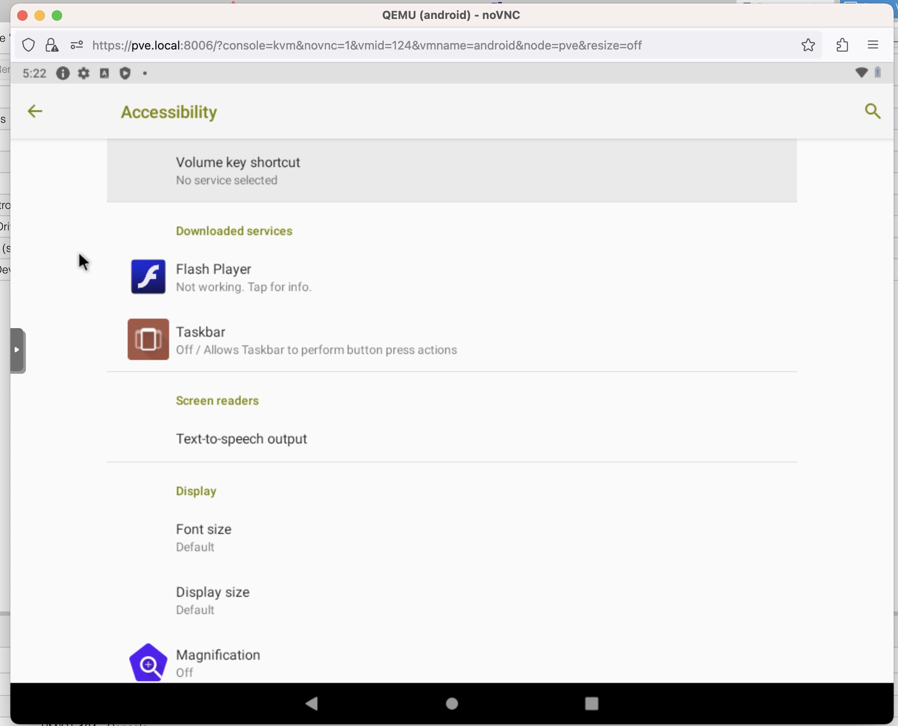
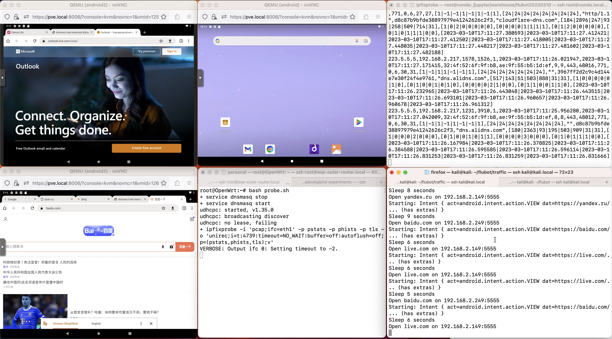
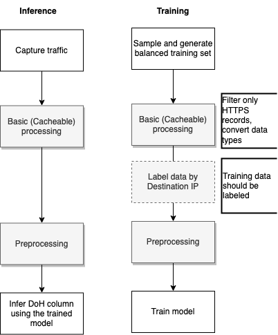
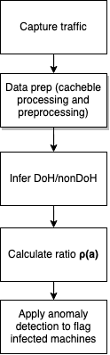

2023-03-08-flubot-multiple-nodes
1 Overview
In this experiment we are analyzing the proposed method of detection DNS-over-HTTPS Exfiltration traffic.
1.1 FluBot malware
We are using the sample of FluBot malware - Android malware which performs exfiltration of data using DoH, (Figure 1.1). It was active during 2021 and 2022, in the
Sample of FluBot 5.2 was downloaded from the vx-underground. In the version 5.0 DoH tunneling feature was integrated to the FluBot.
In the May 2022 the FluBot infrastracture was taken down by then EuroPol. However, we use it as a real-world malware sample to validate the DoH tunneling/exfiltration detection algorithm.
Report of F5.com on the FluBot malware can be found here.

1.2 Proposed method
The proposed method is based on the two steps:
- Classify network flows as a DoH or non-DoH, with a classifier built on the Jeřábek et al. (2022) dataset (https://zenodo.org/record/6024914#.ZAcru-xBzaV)
- Apply the Netflow-based DGA detection algorithm Grill et al. (2015) to detect infected machines
Machine-learning classification of DoH traffic allows us to apply the algorithm to DoH traffic, originally designed for the plaintext DNS.
1.3 DoH traffic classification
DoH traffic uses using standard HTTPS 443 port, which blends DNS packets within the generic HTTPS traffic. Netflow/IPFIX data of the DoH traffic does not contain direct features which could help to distinguish DNS traffic from other HTTPS communications. In this experiment we build a classifier on the Jeřábek et al. (2022) dataset using Logistic Regression, Random Forest and the Histogram-based Gradient Boosting (Section 7.1), and selecting the models which are the most robust to the different network environment (Section 8.1).
1.4 Infected network traffic recording
For the experiment, we modelled the malware detection algorithm deployment into the production network. For that we deployed the sandbox network environment into the Proxmox server with 4 machines: 3 Android x86 emulators and 1 Kali Linux instance (see Chapter 2), behind the OpenWRT router provisioned with the IPFIXprobe tool for recording traffic on the network border.
One of the Android machines was infected by the FluBot malware during the experiment, the traffic was collected and saved to the CSV files (see Chapter 3) Figure 1.2 .

1.5 Model training
Model training includes data preparation in two steps (cached processing and preprocessing with hyperparameters) (see Chapter 4).

1.6 Malware detection
To detect the malicious behavior of the machine, we propose to use the ratio of DNS requests and contacted IP addresses for every host in the local network described in the Grill et al. (2015). The paper was focused on DGA-based malware detection. However, the approach should be used to detect DNS data exfiltration, too, since the behavior pattern is similar (see Chapter 10).
